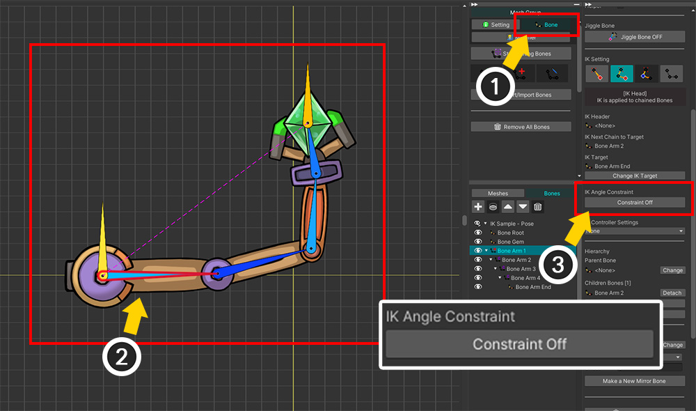
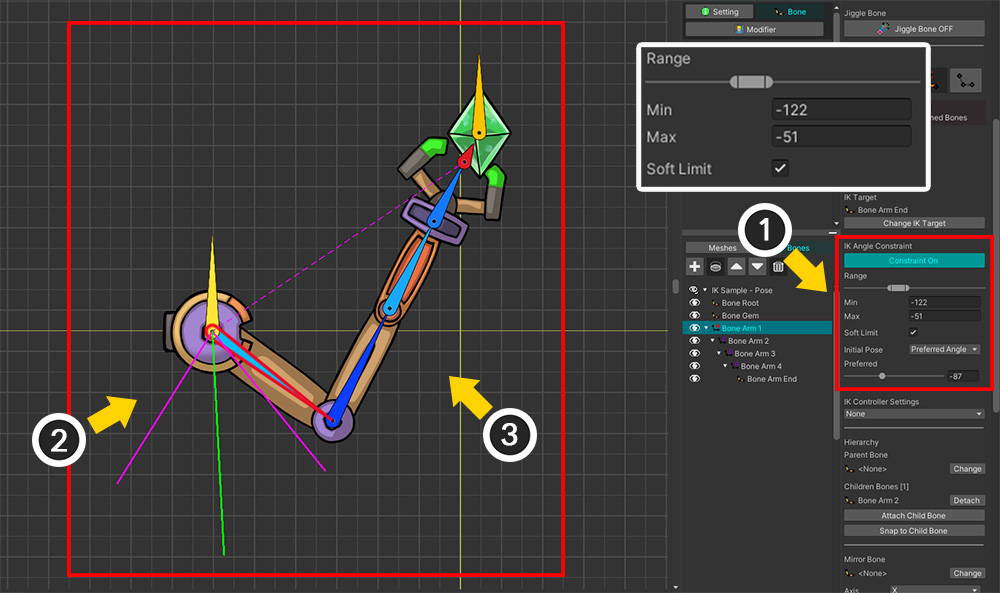
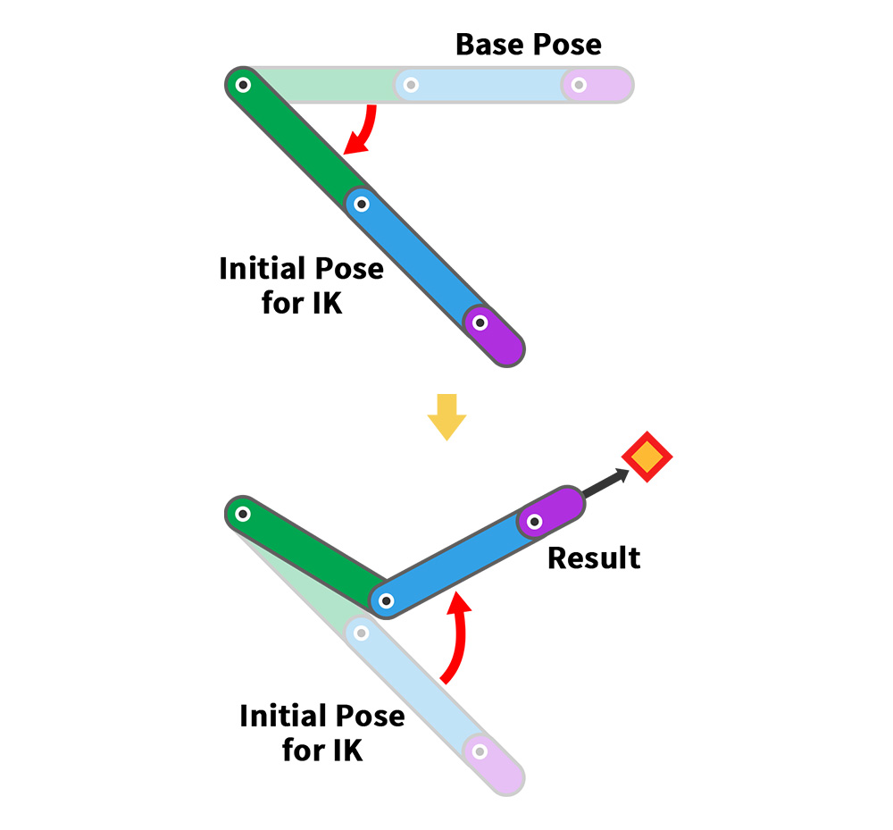
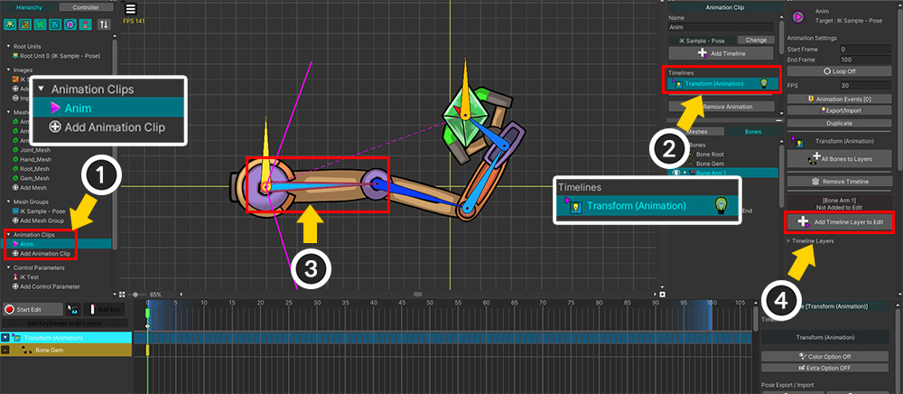
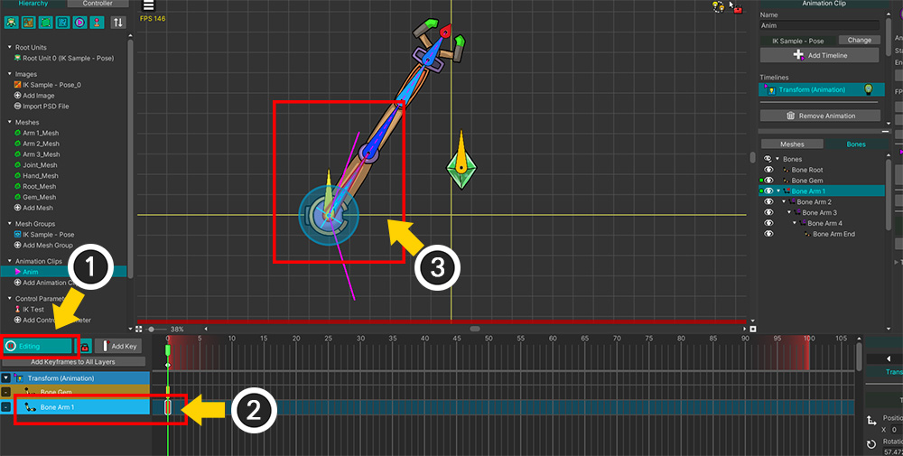
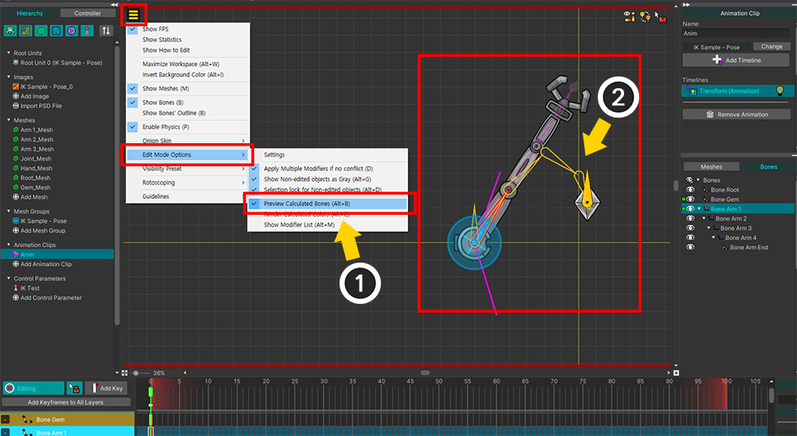
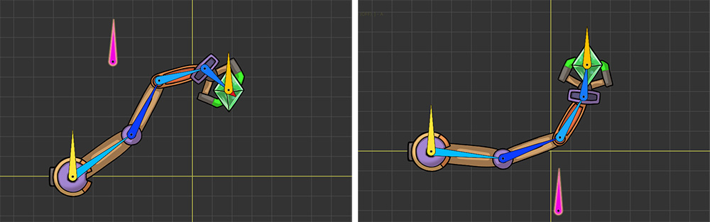
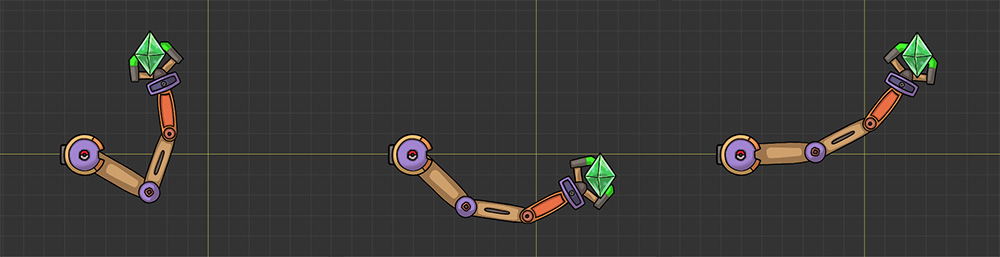

AnyPortrait > 메뉴얼 > 의도한 대로 IK가 동작하도록 만들기
의도한 대로 IK가 동작하도록 만들기
1.5.0
IK 체인이 IK 컨트롤러 등에 의해서 움직일 때, 캐릭터가 작업자의 의도에 맞지 않는 자세를 취하는 경우가 있을 것입니다.
IK는 자동으로 움직이는 본들을 제어하기 어렵다는 단점을 가집니다.
이 페이지에서는 작업자의 의도대로 IK가 동작하도록 유도하는 몇가지 방법들을 소개합니다.

로봇 팔이 보석을 잡는 것을 표현한 예제입니다.
1개의 End 본을 포함한 5개의 본들로 구성된 IK 체인이 있으며, 보석("Bone Gem")을 대상으로 "Position" 타입의 IK 컨트롤러가 설정되어 있습니다.

(1) Transform 모디파이어를 이용하여 보석("Bone Gem")을 움직입니다.
(2) IK 컨트롤러에 의해서 로봇 팔이 움직여서 보석을 잡는 것을 볼 수 있습니다.
그런데, IK의 결과는 저희가 기대한 것과 다릅니다.
IK 연산은 성공적이지만 그 결과는 마음에 들지 않습니다.

IK 기법은 그 특성상 명확한 답을 가지지 않습니다.
알고리즘이나 제약, 속성에 따라서 IK의 결과가 달라지게 됩니다.
동일한 위치의 Effector Bone에 대해서 로봇 팔이 다양한 자세를 취할 수 있음을 볼 수 있습니다.
IK 연산 과정에서 사용자의 의도가 반영되므로, 이를 이용하여 본들이 의도한 형태로 자세를 취하도록 만들 수 있습니다.
다음의 방법들을 확인하여 적절히 활용하면 되겠습니다.
컨트롤 파라미터를 이용하여 테스트하기
본의 속성을 변경하고 IK 컨트롤러의 결과를 확인하기 위해서는 Effector Bone을 움직일 필요가 있습니다.
그때마다 애니메이션 편집 화면으로 돌아가는 것은 번거로운 작업입니다.
이때 컨트롤 파라미터와 Transform (Controller) 모디파이어를 이용하면 테스트를 쉽게 해볼 수 있습니다.

(1) 테스트를 위한 컨트롤 파라미터를 생성합니다.
(2) 여기서는 이름을 "IK Test"로 짓고, Float 타입으로 설정했습니다.
(3) 컨트롤 파라미터의 범위를 0~1로 설정했습니다. 0에서는 기본 상태로 두고, 1에서 Effector Bone을 움직여볼 것입니다.

(1) 메시 그룹을 선택하여 Modifier 탭을 선택한 후, Add Modifier 버튼을 누릅니다.
(2) "Transform (Controller)" 모디파이어를 선택하여 추가합니다.

(1) Transform (Controller) 모디파이어가 선택된 상태에서 컨트롤 파라미터의 값이 0, 1인 상태에 각각 모디파이어 키를 추가하고, 컨트롤 파라미터의 값을 1로 변경합니다.
(2) 편집 모드를 켭니다.
(3) IK 컨트롤러의 대상인 보석("Bone Gem")을 움직입니다.

(1) 이 상태에서 Bone 탭으로 전환합니다.
(2) "본 편집 모드(Editing Bones)"가 꺼진 상태에서 컨트롤 파라미터를 조절합니다.
(3) Effector Bone인 보석이 움직이면서 IK 컨트롤러가 어떻게 동작하는지 확인할 수 있습니다.
이렇게 테스트를 하면 IK의 동작을 바로 확인하면서 본을 수정할 수 있습니다.
테스트가 완료되었다면 테스트용으로 생성했던 컨트롤 파라미터를 삭제하시면 됩니다.
회전 각도를 제한하기

첫번째 방법은 본의 회전 각도를 제한하는 것입니다.
사람의 팔이나 다리처럼 특정 방향으로만 회전하게 만들기 위해서는 이 방법이 필수적입니다.
(1) Bone 탭을 선택합니다.
(2) 속성을 변경하고자 하는 IK 체인 내의 본을 선택합니다.
(3) "IK Angle Constraint" 항목의 Constraint 버튼을 눌러서 속성을 활성화합니다.

(1) 회전 각도를 제한할 수 있는 UI가 나타납니다. 슬라이더나 "Min, Max" 항목을 조절합니다. "Soft Limit" 속성도 확인해둡시다.
(2) 작업 공간에서 선택된 본의 회전 범위를 볼 수 있습니다.
(3) 본의 회전 각도가 제한되면서 IK의 결과가 달라지는 것을 볼 수 있습니다.
참고
IK 컨트롤러의 결과를 보기 위해서는 "본 편집 모드"가 비활성화된 상태여야 합니다.

"Range, Min, Max" 항목의 아래에 위치한 "Soft Limit" 속성은 회전 제한을 어떻게 적용할지를 결정합니다.
"Soft Limit"를 켜면 설정된 범위를 조금 넘어가더라도 움직임이 부드럽게 보이도록 만듭니다.
반면, "Soft Limit"을 비활성화하면 각도 제한을 엄격하게 적용하는 것을 볼 수 있습니다.
(이 옵션은 IK 방식이 FABRIK인 경우에만 동작합니다.)
초기 자세를 설정하기

"초기 자세(Initial Pose)"를 설정하는 방법도 IK를 제어하는데 효과적입니다.
AnyPortrait의 IK 연산은 위의 과정을 거쳐서 수행됩니다.
먼저, "기본 자세(Base Pose)"에서 "초기 자세"로 본들을 움직입니다.
그리고 "초기 자세"를 기준으로 IK 연산을 수행합니다.
IK 알고리즘은 본들을 조금씩 움직이면서 목표를 달성하기 때문에, "초기 자세"에 따라 그 결과가 크게 바뀌게 됩니다.
사용자가 초기 자세를 설정하는 것은 IK를 제어하는 가장 효과적인 방법입니다.
다음은 초기 자세를 설정하는 옵션들에 대한 설명입니다.
초기 자세 옵션 1. Preferred Angle
초기 자세를 설정하는 첫번째 옵션은 "Preferred Angle" 입니다.
설정된 각도로 본을 회전한 상태가 "초기 자세"가 됩니다.
이 옵션은 모디파이어나 애니메이션에 무관하게 항상 일정한 자세로부터 IK 연산이 수행됩니다.

(1) 본을 선택합니다.
(2) 회전 각도 제한(IK Angle Constraint)을 활성화합니다.
(3) Initial Pose의 값을 "Preferred Angle"로 설정합니다.
참고
초기 자세는 회전 각도를 제한하는 연산과 병행하여 수행됩니다.
따라서 회전 각도 제한을 활성화해야 합니다.

(1) Preferred 슬라이더를 조절합니다.
(2) 작업 공간의 녹색 선을 통해서 Preferred Angle을 볼 수 있습니다.
(3) Preferred Angle 값에 따라서 로봇 팔의 자세가 바뀝니다.

Preferred Angle에 따라서 IK 결과가 어떻게 바뀌는지 볼 수 있습니다.
초기 자세 옵션 2. Keep Current
"Preferred Angle" 방식은 직관적이고 편리하지만, 항상 고정된 자세를 기준으로 한다는 단점이 있습니다.
만약 애니메이션에 따라서 관절의 특성이 바뀐다면, "초기 자세"를 변경할 수 있어야 합니다.
"Keep Current (FK)" 방식은 IK가 연산되기 직전의 "기본 자세(Base Pose)"를 "초기 자세"로 간주합니다.
즉, 모디파이어나 애니메이션에서 직접 본의 "초기 자세"를 설정할 수 있습니다.
(FK를 이용하는 옵션은 FABRIK 방식에서만 허용됩니다.)
참고
FK는 "Forward Kinematics"로서 "IK (Inverse Kinematics)"의 반대입니다.
키프레임 애니메이션에서 본들을 하나씩 회전시키면서 애니메이션을 만드는 기법을 의미하며, AnyPortrait의 기본적인 작업 방식은 모두 FK입니다.

(1) 본을 선택합니다.
(2) 이번에는 Initial Pose의 값을 "Keep Current (FK)"로 설정합니다.

"Keep Current (FK)" 방식을 활용하기 위해서는 IK 체인의 본들을 모디파이어나 애니메이션를 이용해서 직접 움직여야 합니다.
(1) 애니메이션을 추가하거나 선택합니다.
(2) Transform (Animation) 타임라인을 추가하거나 선택합니다.
(3) IK 체인 내의 본을 선택합니다.
(4) 해당 본을 타임라인에 등록합니다.

(1) 애니메이션의 편집 모드를 켭니다.
(2) 본을 선택한 상태로 키프레임을 추가합니다.
(3) 본을 회전시켜서 "초기 자세"를 만듭니다.

(1) 애니메이션 편집 모드를 해제합니다.
(2) 키프레임을 통해서 설정된 "초기 자세"에 맞게 IK 컨트롤러의 결과가 위와 같이 바뀐 것을 볼 수 있습니다.

(1) 애니메이션 편집 모드 상태에서 IK 결과를 미리 보기 위해서는 보기 메뉴에서 "Preview Calculated Bones" ( Alt+B )를 활성화합니다.
(2) 작업 공간에서 노란색 외곽선으로 표시된 IK 결과를 볼 수 있습니다.
초기 자세 옵션 3. Average
마지막 옵션은 "Preferred Angle"과 "Keep Current (FK)"의 중간값을 "초기 자세"로서 이용하는 "Average (Preferred+FK)" 옵션입니다.
이것은 Preferred Angle을 설정하되, 일반 본들처럼 IK 체인의 본들에 대한 애니메이션도 만들어서 IK에 반영하는 옵션입니다.

(1) 본을 선택합니다.
(2) Initial Pose의 값을 "Average (Preferred+FK)"로 설정합니다.

애니메이션 편집 화면에서 본을 회전시켜봅시다.
위와 같이 키프레임 애니메이션에서는 본이 오른쪽 위를 향합니다. (FK)
반면, 설정된 "Preferred Angle"은 오른쪽 아래를 향합니다.

IK 컨트롤러의 결과는 두개의 방향의 평균을 기준으로 연산이 되는 것을 볼 수 있습니다.
중간 본에 IK 컨트롤러를 설정하기
이 방법은 앞의 방법들과 완전히 다른 접근법을 가집니다.
IK 체인에 2개 이상에 IK 컨트롤러를 지정할 수 있는 특성을 이용하여 IK의 결과를 조절하는 것입니다. (관련 페이지)

(1) 새로운 본("Bone Helper")을 IK 체인의 중간 즈음에 추가합니다.
새 본은 IK 체인과 별개로 두어 자유롭게 움직이도록 만듭니다.

(1) IK 체인의 중간에 위치한 본을 선택합니다.
(2) 추가된 본("Bone Helper")을 대상으로 Position 타입의 IK 컨트롤러를 설정합니다. 가중치를 0보다 큰 값으로 설정합니다. 가중치 값에 따라 전체 IK 컨트롤러에 미치는 영향이 조절됩니다.

(1) 애니메이션을 선택합니다.
(2) 추가했던 본("Bone Helper")을 선택하고 타임라인에 등록합니다.
(3) 키프레임을 추가합니다.
(4) "Bone Helper"의 위치를 변경합니다.

"Bone Helper"에 따라 로봇 팔이 다르게 움직이는 것을 볼 수 있습니다.
FK를 이용하여 IK를 제어할 때의 팁
FK를 사용하는 "Initial Pose"의 옵션을 선택했거나, 중간의 Effector Bone을 이용하는 경우, 키프레임을 추가하여 "초기 자세"를 만들어야합니다.
이 경우 많은 키프레임들을 만들지 않아도 됩니다.

(1) IK 체인에 속한 본들은 첫 프레임에만 키프레임이 생성되어 있습니다.
(2) Effector Bone을 포함한 그 외의 객체들은 정상적으로 애니메이션 전체에 걸쳐서 키프레임들이 생성되어 있습니다.
(3) 여러 키프레임들에 의하여 보석만 계속해서 움직입니다.

애니메이션을 재생하면 움직이는 보석에 맞게 로봇 팔이 적절하게 움직이는 것을 볼 수 있습니다.
이처럼, IK 연산의 가이드 용으로 키프레임을 만드는 경우, 최소한의 키프레임만 만들면 편하게 작업하실 수 있습니다.